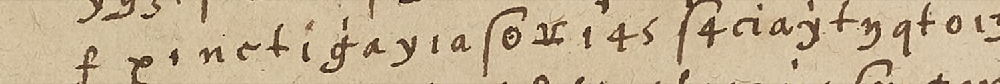
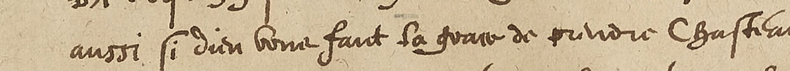

01The verification question, answered negatively
The task came with an instruction to check something first: look in Français 3621 for the ciphered originals of the letters intercepted in January 1592. They are not there. No. 22, at folio 31, is a plaintext decipherment only — a fair copy of the French of three intercepted Vaudémont letters, with no cipher anywhere on the sheet, headed “Dechiffrement des lettres de Monsieur de Vaudemont à Monsieur de Lorraine [son] pere, interceptees et apportees à Monsieur de Dinteville, le XX[e] Janvier 1592”. Nothing else in the volume is described as intercepted. The DECODE database confirms it independently: its record for no. 22 is marked Decrypted and runs to two pages. So the scoring note attached to this target — if no. 22’s decipherment corresponds to a cipher copy elsewhere in the volume the key falls, otherwise a single copy — resolves to the second branch.
02No key has ever been published
This is the one claim in the write-up that is a negative, so it was checked hard, and it rests on a positive catalogue statement rather than on absence of hits.
DECODE record 9449 is this letter, by shelfmark, sender, receiver and date, and its status field reads Non-decrypted; its symbol set is recorded as
“Graphic signs Alphabet Numerical”, which matches what is on the page. Of the eight DECODE records for Français 3621 only this one and no. 116 are undecrypted.
No key record anywhere in DECODE is attributed to Charles III de Lorraine or to Vaudémont.
Keys for other Lorraine ciphers are published and are not this system: Bréval to Henri II of about 1620, and Bassompierre to Charles III of 1 August 1593, both reconstructed by Satoshi Tomokiyo. Desenclos and Lasry’s 2024 paper publishes the Henri IV–Nevers digit ciphers of Français 3995; Français 3621 is never mentioned in it. Henri Lepage’s 1864 edition of Charles III’s League correspondence stops in 1591 and prints no cipher table.
Four key sheets of 1592 in the Nevers key book, Français 3995, whose DECODE profile matched this cipher, were fetched and examined. All four are eliminated on documentary grounds.
| Sheet | What it actually is |
|---|---|
| fol. 32 | A jargon dictionary of covert equivalents — Nouvelles = “Draps de soye”, Necessité = “Medecine” — in geometric signs and figures 2–40. Not a letter cipher. |
| fol. 83–84 | An all-digit cipher with a Nulles row. “Duc de Lorraine” appears in it as nomenclator entry 46, so it is somebody else’s key that mentions Lorraine. |
| fol. 98 | Endorsed in its own hand: “1592 / Chifre d’entre le Duc de Parme et le Roy Cath[olique] en l’an 1592 / lequel sert aussi p[our] le Duc de Sessa et don Diego de Ybarra”. |
| fol. 103 | A Nevers-circle nomenclator, its flap listing Gondi, Nemours, Guise and Montpensier. It gives three homophones for every letter, which is incompatible with this cipher’s single symbol standing at 14.4%. |
That last sheet is worth recording for its own sake, because it shows what a full French key of this milieu contains: a 22-letter alphabet in three rows of homophones, syllable figures 1–72 (ba be bi bo bu, ca ce ci co cu and so on), double-letter figures 73–98, word figures 99–353, and overbarred lists of provinces and towns in which Lorraine is 30 and Metz 68.
03The letterforms are ordinary letters
An earlier attempt on this piece treated the cipher the way one treats a symbol cipher: segment the glyphs, cluster them by shape, solve the cluster sequence. The segmentation worked. The baselines of this page slope, and the shear that sharpens the histogram of glyph y-centres is −0.031; deskewing at that value resolves the block into 21 line bands at about 87 px spacing in the native 4046 × 5762 image. The clustering did not work, and it never would have, because it was unnecessary. These glyphs are ordinary cursive minuscules — the same letters as the clear text, some carrying a crossbar, an overbar or dots, with a handful of special signs — and at about one and a half times native they can be read straight off the page.

The letter is also not a wholly ciphered despatch: clear French and cipher alternate inline on the same lines. Lines 9 and 20 are entirely clear, line 21 is cipher then clear, and the whole postscript after the signature is clear. The eye transcription records 1,109 tokens — 1,071 letter symbols in 44 distinct forms, and 38 nomenclator figures, of which 139 occurs ten times and 145 seven. Three long internal repeats, including a twelve-symbol group recurring on lines 15 and 19, confirm the transcription is self-consistent.
What kind of cipher it is can be settled before solving it. The letter-symbol frequencies match French rank for rank through fourteen places, the commonest symbol standing at 14.4%. The coincidence statistics place it between a purely monoalphabetic and a fully homophonic system, which is to say a letter substitution with modest homophony, plus the numeric nomenclator.
| IC, single | IC, digraph | Trigram repeat | |
|---|---|---|---|
| This cipher | 0.0592 | 0.00595 | 39.8% |
| 44-symbol homophonic control | 0.0416 | 0.00257 | 19.3% |
| 22-symbol monoalphabetic control | 0.0834 | 0.01034 | 61.4% |
| Plain French | 0.0795 | 0.00894 | 58.5% |
04The search had to be rebuilt, and the failure was proved first
The solver used in the earlier attempt could not have broken this cipher, and the way to establish that is not to argue about it but to give the solver a cipher whose key is known. On a control of the same symbol count, the same length and the same segmentation, built by enciphering real French, the random-move annealer recovered 37 to 56 per cent of letters and scored −2.64 per character, while the true key scored −1.62. The optimum was therefore well separated by score, and the failure was in the search rather than in the information available.
Replacing the random move with a steepest-ascent sweep — for each symbol in turn, try every plaintext letter and keep the best — run to convergence and then kicked out of the local optimum, recovers known keys at 98.7 to 99.6 per cent in about fifteen seconds.
Two traps had to be closed on the way, and both are the kind that produce a confident wrong answer. Allowing the search to mark symbols as nulls lets it delete every hard position and map the rest onto e, t, n, r and s, scoring −1.70 — better than real French — which is purely an artefact of normalising the log-probability per surviving character. And selecting the best key by unpenalised score picks a degenerate key that reads etenete…. Nulls are capped, and degenerate keys are rejected by an explicit test on the induced letter frequency.
05The key, and why it is right
The recovered mapping is stable: independent runs from different seeds, and a run with the crib locked, converge on it. The period folds u with v and i with j, and the model follows. Written the way a key of the time would be written, plaintext first, it is:
| Plain | Cipher letterforms | Plain | Cipher letterforms |
|---|---|---|---|
| a | alpha form · i | n | pi form · long-s with overbar · the figure-4 form · p · n |
| c | capital E · small square with dot · f | o | capital H crossed · dagger form · the r/hook form |
| d | o with a mark above · q | p | the beta-like b · b |
| e | the large X · double m with overbar · t with crossbar · lambda form · gamma form · t | q | d |
| h | looped e | r | n with two dots under · reversed 3 · o · v |
| i | a | s | o with central dot · n with descending tail · capital E barred · long s · looped x |
| l | y | t | c with overbar · c |
| m | the 3-shaped z | u (and v) | g with crossbar · c with two dots under · l with crossbar · g |
Two things are worth reading off that table. The cipher letterforms have nothing to do with the letters they stand for — cursive f is c, n is s, c is t, t is e — which is exactly why a reader who took the page for badly spelled French would get nowhere. And the homophones fall where a cipher clerk would put them: six forms for e, five each for n and s, four for r and u, one apiece for the rare letters.
The table also shows its own defect, and it is the useful kind. Five letters — b, f, g, x and z — come out with no cipher value at all, and i with only one form although French needs it as often as s. Over a thousand characters those letters should appear some thirty-five times between them. Their absence is not a property of the cipher; it is where the mis-transcribed glyphs have gone, and it marks precisely which forms to look at again.
The verification does not depend on the language model at all. The eight-symbol group that the key renders chasteau occurs at two separate places in the cipher, on line 15 and on line 19. Chasteauvillain stands in the clear on the same page, twice: in the body at line 9, “aussi si dieu nous fault la grace de prendre Chasteauvillain”, and again in the postscript. The key was not fitted to that word — the 4-gram search produced it, and locking it afterwards changed nothing else.

Form by form, at both occurrences:
| Letterform on the page | plain f | looped e | plain i | plain n | plain c | plain t | plain i | g with crossbar |
|---|---|---|---|---|---|---|---|---|
| Reads | c | h | a | s | t | e | a | u |
Eight forms, none of them standing for itself, producing a place name that the same scribe wrote out in clear two inches higher up the page. That is the whole argument, and it does not depend on the language model, on the 4-gram score, or on my judgement about what reads like French.
Words the key produces unprompted, none of them supplied to the search: munitions three times, promesses, prisonniers, resolution, secours, quartiers, clairement, commandement, conserver la plaine, ramener mon armée, aultres commoditez, il fauldra, recepvoir.
06What the ciphered passages say
The ciphered matter is the military business that the clear text only skirts, and it belongs to the same operation as the clear postscript. The Duke writes of the promises made and not kept, “de tant de … ses promesses … qu’ils avoient fait”; of prisonniers and, repeatedly, of munitions — the word returns at the very end of the letter, where the cipher stops and the clear resumes with “si munitions”. He orders his son to recepvoir mon commandement and to conserver la plaine. He names Chasteauvillain, and states the intention de ramener mon armée … es quartiers de la Faulche — La Fauche lies between Neufchâteau and Chaumont, exactly the theatre the clear postscript describes. He demands to be préadverti. Near the end come resolution, le peu de moien and secours, and Chasteauvillain once more, with l’on avoit … promis.
Because the reading is partial it is worth showing the actual output rather than only the words picked out of it. Four lines, exactly as the key produces them, with the nomenclator figures in brackets and nothing tidied. The recognisable French is in bold; the rest is where the mis-transcribed glyphs fall.
15 chasteauilainss [145] nntaisesderamenermonarmedooitesesquartiersde-
12 nderetuonseruerlaplaneiquantane [139] sceulpde. [88] ceauoieituerlmoulpourta
18 isdese [88] [31] resolutione [146] eienlerpeudemoienqetsecours [139] [145] tromespard
19 elapournauainerletenhtdudintonchasteauilaitsainsu [139] lonauoitsepromisseThat is what a solved key and an imperfect transcription look like together: the words stand out whole, the joins between them do not.
Around them the clear text, transcribed separately, supplies the rest: the grace of taking Chasteauvillain, Chaulmont, the sieur de Buzonville, la Glosiere, the munitions promised and the siege.
What the letter will not give up is the nomenclator. Thirty-eight figures stand in the cipher, for names and words that the key would have listed:
| Figure | 139 | 145 | 31 | 57 | 141 | 88 | 98 | 13 | 103 | 121 | 122 | 123 | 137 | 146 |
|---|---|---|---|---|---|---|---|---|---|---|---|---|---|---|
| Times used | 10 | 7 | 4 | 3 | 3 | 2 | 2 | 1 | 1 | 1 | 1 | 1 | 1 | 1 |
139 and 145 carry a third of the nomenclator between them and are plainly the two things this letter is about; on the evidence of the clear text they ought to be Chasteauvillain and Chaulmont, or a person and a place of that weight. But that is inference, not reading, and it is left as inference. No key survives to supply the values, and a single letter does not constrain them.
07How good the reading is, and what remains
The solution scores −2.10 per character. Real sixteenth-century French scores −1.93 under the same model, and the true key of a clean control scores −1.63. The gap is measured, not guessed at. Controls in which six to twelve pairs of distinct glyphs are deliberately transcribed as the same form — which is how by-eye reading of barred and dotted variants fails — score −2.15 to −2.23 and recover 65 to 75 per cent of letters. That is what this decode looks like. Random transcription noise was calibrated separately and does not account for it; the error is systematic, as it should be.
So the cryptanalysis is finished and about a quarter of the glyph identifications are still wrong. Re-reading the 42 per-line crops with the key now in hand, correcting the barred, dotted and capital variants one at a time, would read the letter through. The fourteen nomenclator figures remain unassigned: no key survives, so their values can only come from context or from a second letter in the same cipher. The Archives départementales de Meurthe-et-Moselle, unexamined here, is where a duplicate or a key would most plausibly survive.
Manuscript rights: Bibliothèque nationale de France.